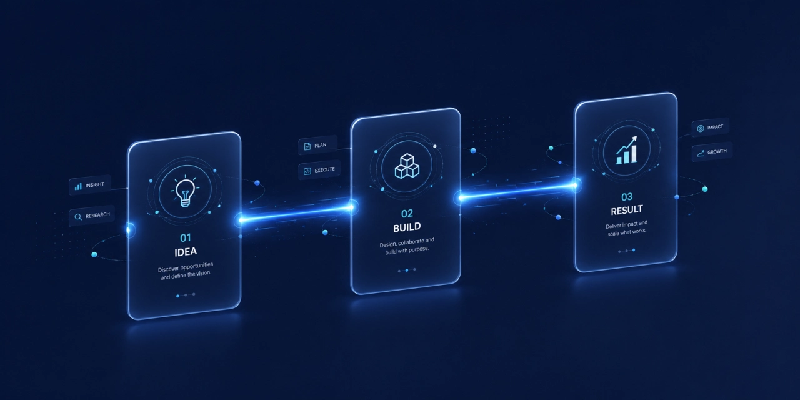

Exploring Salesforce for your organisation or trying to get more out of the org you already have? You are in very good company. Thousands of leaders are searching for the same thing: not another feature list, but a point of view on how to make this platform actually move the business.
That point of view has a name thought leadership and in Salesforce implementation it is the difference between a system that goes live and a system that delivers. At VedSphere we don't just stand up orgs; we help you decide what to build, what to leave alone, and where the next quarter's return will come from.
What thought leadership actually means here
Thought leadership isn't about having knowledge. It's about applying it in ways that make your decisions sharper. In a Salesforce context, that shows up as three very practical things:
- Strategic recommendations that tie every configuration choice back to a revenue, cost, or experience outcome.
- Signal over noise translating the three-times-a-year release cycle into the handful of changes that matter for you.
- Guidance through the hard parts adoption, customisation, and the optimisation work that begins the day after go-live.
A great partner is a trusted voice in the room when the roadmap is being decided not just a pair of hands once it already is.

Why it matters in implementation
It builds trust and credibility
Buyers are informed and sceptical. A partner who publishes useful thinking guides, breakdowns, honest trade-offs earns the authority to be believed when the stakes are high.
It simplifies complex decisions
Salesforce is powerful precisely because it's flexible which makes it easy to over-build. Good guidance demystifies the choices so you focus effort where it pays.
It sparks innovation and growth
The ecosystem never stops moving. Partners who set the pace rather than chase it keep your team a release ahead of the competition.
How VedSphere leads with it
We pair technical depth with strategic insight so the work compounds. In practice that looks like:
- Educational resources blogs, guides and whitepapers with actionable steps, not marketing fluff.
- Webinars & enablement interactive sessions on best practices and release changes that turn licences into adoption.
- Real success stories case studies that show the measurable impact of strategy paired with execution.
- Active community engagement we stay in the forums and events so the latest thinking reaches you first.
The takeaway
Implementation is the starting line, not the finish. The compounding returns come from strategy, sequencing and expert judgement applied over time.
Ready to elevate your Salesforce strategy?
Starting fresh or optimising an existing org let's map the next highest-value move together.